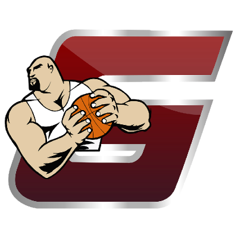
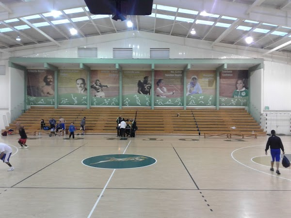

CNMB
| Escudo |
|---|
|  |
| Datos |
| Nombre: Gigantes del Estado de Mexico Anio de Fundacion: 2012 Ciudad: Toluca, Estado de Mexico Estadio: Gimnasio Adolfo Lopez Mateos Capacidad: 2,000(?) Sitio web: No tiene |
| Historia |
|
Surgió en el 2012 a iniciativa del Gobernador del Estado de México , el Director General del Instituto Mexiquense de Cultura Fisica y Deporte y Francisco Cervantes presidente del equipo. Se diseño el proyecto con el fin de impulsar la práctica del deporte en la niñez y Juventud Mexiquense atraves de un equipo Profesional de Basquetbol. Se tomó la franquicia del equipo Volcanes, adscrita a la (LNBP) y decidieron establecerse en la sede de Toluca jugando en el Gimnasio Adolfo López Mateos de la Universidad Autonoma del Estado de México. El equipo Gigantes Estado de México empezó su historia en la liga Profesional jugando como local el 4 de Septiembre de 2012 contra los Osos de Guadalajara, el equipo se retiro en 2016. |
| Estadio |
|  |